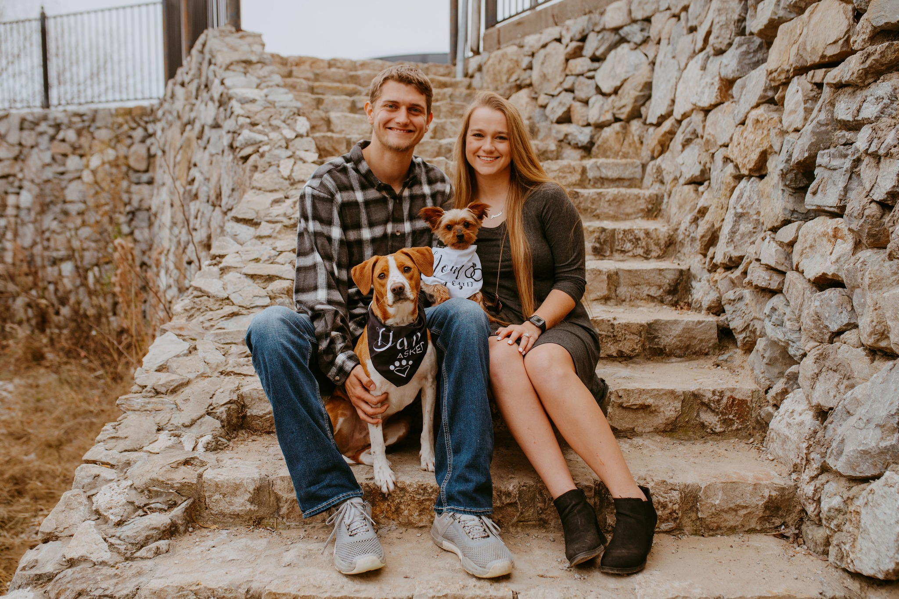

Press On, Preston
A quiet place for updates, prayer requests, and ways to support Preston through treatment and recovery.

Walking with Preston
Preston is facing a difficult cancer diagnosis and a long road of treatment and recovery. This page was created as a simple place for family and friends to stay updated, pray with us, and support him in practical ways.
We are deeply grateful for every prayer, message, meal, gift, and act of kindness.
Updates
We will use this section for simple updates as treatment moves forward.
Latest update: Family Update – 5/28/2026 –
Preston has been moving through a very full stretch of appointments, preparation, and pre-surgery care as his team gets everything ready for his upcoming cancer surgery.
His doctors have confirmed the surgical plan for his right-sided tongue cancer, which includes removal of the affected portion of the tongue, reconstruction using tissue from his forearm, and temporary airway and feeding support during the early healing process. His plastic and reconstructive surgeon also discussed the importance of protecting Preston’s long-term function, speech, healing, and dental health as part of the overall plan.
Preston also completed speech and swallow evaluation and training. The good news is that, even with the pain and difficulty caused by the tumor, his evaluation showed normal pharyngeal swallow with no aspiration. His speech therapist has already started preparing him for what recovery may look like after surgery, including swallowing therapy, communication support, and nutrition planning.
Before surgery, Preston will have his wisdom teeth and molars removed on Thursday, June 4, as part of the preparation for treatment and to help reduce future complications, especially with radiation expected after surgery.
Right now, Preston and Emily have been doing everything they can to prepare. They have been cleaning, working, getting things in order, attending appointments, and spending precious time with family before they shift their full focus to surgery and recovery.
Preston’s pre-admission labs were also completed on May 22. His bloodwork and basic chemistry labs were reviewed as part of his surgical preparation. His pre-admission blood work also came back normal and reassuring. His CBC and basic chemistry labs looked solid for pre-surgery screening, with no obvious concerns in the results shared.
Please continue praying for Preston, Emily, their families, and every doctor, surgeon, dentist, nurse, therapist, and caregiver who will be part of this road ahead. The next few weeks are going to be heavy, but Preston is facing them with faith, strength, and the love of so many people around him.
Thank you for continuing to support, pray, give, share, and show up for them.
— The Weeks Family
Family Update – 5/18/2026 –
First, thank you to everyone who has reached out, prayed, shared encouragement, donated, or simply checked in on Preston and Emily. The amount of love and support surrounding them right now has meant more than words can explain.
Over the last two weeks, things have moved very quickly. Preston has now completed multiple specialist consultations, pathology reviews, nutrition counseling appointments, PET imaging, and surgical planning visits.
The PET scan confirmed a large tumor on the right side of Preston’s tongue, along with lymph node involvement in his neck. Thankfully, there was no evidence of distant metastatic disease found elsewhere in his body, which was one of the biggest answers to prayer we could have received at this stage.
Doctors have finalized the surgical plan, and it will be a very extensive operation expected to last around 10 hours. The surgery will include:
Removal of a large portion of the tongue affected by cancer.
Neck dissection to remove affected lymph nodes.
Mandibulotomy (temporarily splitting the jaw for surgical access).
Reconstruction using tissue and blood vessels from his forearm.
Placement of a tracheostomy to protect his airway during recovery.
Feeding tube support during healing and treatment.
The current expected hospital stay after surgery is approximately 10–14 days, followed by months of recovery, rehabilitation, speech/swallow therapy, and radiation treatment.
One of the hardest parts emotionally has been the reality of what recovery will look like. Doctors have explained that Preston will temporarily lose his ability to speak normally after surgery because of swelling, reconstruction, and the tracheostomy. He and Emily have already started preparing for that possibility together.
Nutrition and weight loss are also major concerns right now. Since Christmas, Preston has lost around 25 pounds because eating has become painful and difficult. Doctors and dietitians are working closely with him to increase calories and protein before surgery so his body is as strong as possible going into recovery.
This Friday’s appointments will focus on additional pre-operative clearance, surgical preparation, speech/swallow evaluation, lab work, and final planning with the reconstructive surgery team.
Emotionally, this has all been overwhelming for Preston and Emily. They are trying to process life-changing medical decisions while also facing the financial reality of cancer treatment without active health insurance coverage. Despite all of that, they are continuing to fight one day at a time with incredible strength and faith.
Please continue praying specifically for:
Complete removal of the cancer.
Strength and peace for Preston and Emily.
Wisdom for the surgical and oncology teams.
Successful reconstruction and healing.
Protection from complications or spread.
Financial provision and emotional endurance in the months ahead.
We truly appreciate every prayer, message, and act of support. We will continue posting updates as we learn more and move closer to surgery.
— The Weeks Family
Ways to support
The GoFundMe is the easiest public way to help, but we understand that some people prefer to give directly because of platform fees or personal preference. Either way, the support means more than we can say.
GoFundMe
For those who prefer the public fundraiser, donations can be made through the GoFundMe page.
Open GoFundMeDirect support
For anyone who would rather give directly, we will list the preferred options here once confirmed by the family.
- Venmo: @Preston-Weeks-2
- Cash App: $pdubya18
Please only use the direct giving information listed on this page or shared directly by immediate family.
Prayer requests
Please pray for peace, strength, wisdom for the doctors, protection through treatment, and comfort for Preston and everyone walking closely with him.